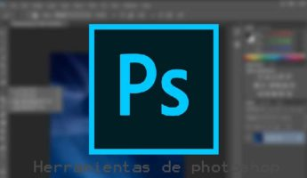

<!doctype html>
<html>
<head>
	
<meta charset="utf-8">
<title>SISTEMAS</title>
	
		  <link rel="shortcut icon" href="../IMG/java.png">
<link rel="stylesheet"href="../CSS/estilo2.css" type="text/css" >		
</head>	

<body>
	
	
	<footer>


  <ul>
<li><a class="active" href="../Untitled-1.html">INICIO</a></li>
      <li><a class="active" href= "estructura.html.html">PHOTOSHOP</a></li>
	  	  <li><a class="active" href="pagina3.html">ILUSTRAITOR</a></li>
    <li><a class="active"href="pagina2.html">CONTACTO</a></li>	

   <li style="float:right"><a class="active" href="about.html">CURIOSIDADES</a></li>
  </ul>
		   
		   
	<br>
		</br>

	
  <center><h1>¿QUE ES ADOBE PHOTOSHOP?</h1></center>
	<br /> <br/>
	 <center>  </center>
   <P>Adobe Photoshop es un editor de fotografías desarrollado por Adobe Systems Incorporated. Usado principalmente para el retoque de fotografías y gráficos, su nombre en español significa "taller de fotos". Es conocido mundialmente.2​ Fue creado en 1986 por los hermanos Thomas Knoll y John Knoll, desde entonces se ha convertido en una marca de uso común, lo que lleva a su uso como un verbo, aunque Adobe desaconseja su uso.3​
Photoshop puede editar y componer imágenes rasterizadas y soporta varios modelos de colores: RGB, CMYK, CIELAB, colores sólidos y semitonos. Photoshop usa sus propios formatos de archivo PSD y PSB para soportar estas características. Desde junio de 2013, con la presentación de Creative Cloud, el esquema de licencia de Photoshop se cambió al modelo de software como servicio. Adobe planea incorporar más características a Photoshop para iPad.4​</P>
	<br /> <br/>
	<br /> <br/>
<center>	 <h1>URL DE NUESTRO FOLLETO DE ACTIVIDADES EN PHOTOSHOP</h1></center>
	<center><a href="https://spark.adobe.com/post/UZYugIgvHobbJ/" target="_blank">
		
	</a> </center>

	<center>	 <h1>URL DE NUESTRO DIARIO DE FOTOS</h1></center>
	<center><a href="	https://spark.adobe.com/page/mBlpqzwzmi6op/" target="_blank">
		
	</a> </center>
 <h1>Historia</h1>
  <p>En 1987, Thomas Knoll, un estudiante de la Universidad de Míchigan escribió un programa en Macintosh Plus para mostrar imágenes a escala de grises en pantallas monocromáticas. Este programa, llamado Display, llamó la atención de su hermano, John Knoll, un trabajador de Industrial Light & Magic, que recomendó a Thomas convertir su programa en un editor de imágenes completo. En 1988, se reescribió el código Display para que funcionara en monitores a colores y juntos los hermanos expandieron la capacidad del programa, Thomas por un lado mejorando la habilidad para leer escribir en múltiples formatos y John desarrollando rutinas de procesamiento de imágenes que más tarde se llamaron filtros.</p>
  <h1>Características</h1>
  <p>Adobe Photoshop en sus versiones iniciales trabajaba en un espacio formado por una sola capa, donde se podían aplicar toda una serie de efectos, textos, marcas y tratamientos. En cierto modo tenía mucho parecido con las tradicionales ampliadoras. En la actualidad lo hace con múltiples capas.
<br />
Photoshop de hecho se ha convertido, casi desde sus comienzos, en el estándar para el retoque fotográfico, pero también se usa extensivamente en multitud de disciplinas del campo del diseño y fotografía, como diseño web, composición de imágenes en mapa de bits, estilismo digital, fotocomposición, edición y grafismos de vídeo y básicamente en cualquier actividad que requiera el tratamiento de imágenes digitales.
<br />
Photoshop ha dejado de ser una herramienta únicamente usada por diseñadores, para convertirse en una herramienta usada profusamente por fotógrafos profesionales de todo el mundo, que lo usan para realizar el proceso de retoque y edición digital, no teniendo que pasar ya por un laboratorio más que para la impresión del material.
<br />
Photoshop fue creado en el año 1991, soporta muchos tipos de archivos de imágenes, como BMP, JPG, PNG, GIF, entre otros, además tiene formatos de imagen propios. Los formatos soportados por Photoshop son los siguientes: 
<br /> <br /> 
PSD (PhotoShop Document), PDD: formato estándar de Photoshop con soporte de capas.<br />
PSB: formato de documento grande que admite documentos de hasta 300.000 píxeles en cualquier dimensión, admiten todas las características de Photoshop, como las capas, efectos y filtros, puede guardar imágenes de alto rango dinámico (HDR), de 32 bits por canal como archivos PSB. Solo puede abrirse en Photoshop CS o superior. Los documentos guardados en formato PSB no pueden abrirse en otras aplicaciones ni en versiones anteriores de Photoshop.<br />
PostScript: no es exactamente un formato, sino un lenguaje de descripción de páginas. Se suelen encontrar documentos en PostScript. Utiliza primitivas de dibujo para poder editarlo.<br />
EPS: es una versión de PostScript. Se utiliza para situar imágenes en un documento. Es compatible con programas vectoriales y de autoedición.<br />
DCS: fue creado por Quark (empresa de software para autoedición) y permite almacenar tipografía, tramas, etc. Se utiliza para filmación en autoedición.<br />
Prev. EPS TIFF: permite visualizar archivos EPS que no se abren en Photoshop, por ejemplo los de QuarkXPress.
BMP: formato estándar de Windows.<br />
GIF: muy utilizado para las web. Permite almacenar un canal alfa para dotarlo de transparencia, y salvarlo como entrelazado para que al cargarlo en la web lo haga en varios pasos. Admite hasta 256 colores.<br />
JPEG: también muy utilizado en la web, factor de compresión muy alto y buena calidad de imagen.<br />
TIFF: una solución creada para pasar de PC a MAC y viceversa.<br />
PICT: desde plataformas MAC se exporta a programas de autoedición como QuarkXPress.<br />
PNG: la misma utilización que los GIF, pero con mayor calidad. Soporta transparencia y colores a 24 bits. Solo las versiones recientes de navegadores pueden soportarlos.<br />
PDF: formato original de Acrobat. Permite almacenar imágenes vectoriales y mapa de bits.<br />
ICO: es utilizado para representar archivos, carpetas, programas, unidades de almacenamiento, etc.<br />
IFF: se utiliza para intercambio de datos con Amiga.<br />
PCX: formato solo para PC. Permite colores a 1, 4, 8 , 24 y 32 bits.<br />
RAW: formato estándar para cualquier plataforma o programa gráfico.<br />
TGA: compatible con equipos con tarjeta gráfica de Truevision.<br />
Scitex CT: formato utilizado para documentos de calidad profesional.<br />
Filmstrip: se utiliza para hacer animaciones. También se puede importar o exportar a Premiere.<br />
FlashPix: formato originario de Kodak para abrir de forma rápida imágenes de calidad superior.<br />
JPEG2000: al igual que el JPEG, es nuevo formato de compresión que permite aumentar la calidad de la imagen.</p>
<h1>Idiomas disponibles</h1>
 <p>Adobe Photoshop está disponible en los siguientes idiomas:
<br /><br />
portugués, chino simplificado, chino tradicional, checo, danés, español, neerlandés, inglés, finlandés, francés, alemán, húngaro, italiano, japonés, coreano, noruego, polaco, rumano, ruso, sueco, turco y ucraniano.6​
<br />
Los textos en árabe, griego, hebreo, oriente Medio y norteafricano están disponibles en Winsoft.</p>
</body>
	
</html>
